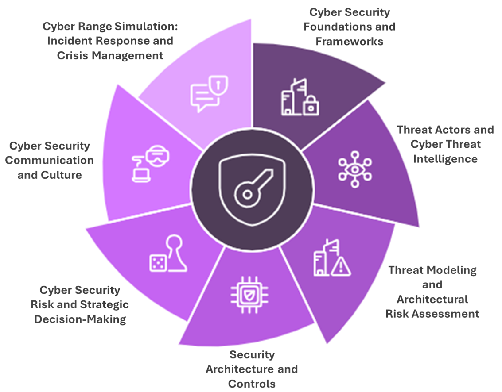

Drawing on my expertise in digital strategy, cybersecurity resilience, and AI integration, I have designed and delivered corporate and executive training programs that bridge the gap between academic insight and organizational practice to help organizations strengthen their digital competencies and prepare their workforce for technology-driven change.
Corporate and Executive Training
My approach to executive education is grounded in applied scholarship, translating complex digital concepts into actionable knowledge for decision-makers.
Training Themes
Cyber Resilience and Risk Leadership
Learn to anticipate, withstand, and respond to digital threats through hands-on exercises, immersive cyber range simulations, strategic risk assessment, and resilience-driven leadership.
Generative AI and the Augmented Enterprise
Discover how to unlock the creative, analytical, and strategic potential of Generative AI within your organization — responsibly, ethically, and effectively.
Digital Strategy and Transformation Leadership
Lead digital transformation with confidence: develop foresight, align innovation with business value, and drive measurable organizational change.
Training Program Highlights
This program empowers professionals and executives to build a resilient cybersecurity culture that aligns technical safeguards with strategic business objectives. Participants explore frameworks like NIST CSF 2.0 and ISO 27001, master threat modeling and cyber-risk analysis, and engage in immersive Cyber Range simulations to experience real-time crisis management.
Sample Focus Areas:
- Foundations of cybersecurity frameworks and compliance
- Threat intelligence and modeling (CTI, MITRE ATT&CK, STRIDE)
- Zero-Trust architecture and controls
- Cyber risk analysis and executive communication
- Crisis response and security culture transformation
This executive training series demystifies Generative AI and equips leaders to integrate AI responsibly into strategy, operations, and innovation. Participants explore how AI can amplify human creativity and decision-making while addressing issues of ethics, transparency, and governance.
Sample Focus Areas:
- Generative AI fundamentals and organizational opportunities
- Responsible AI governance and regulatory trends
- Human-AI collaboration and augmentation in the workplace
- Prompt engineering and applied use cases for business functions
- Designing AI-ready strategies and workforce upskilling
This program helps organizations navigate digital disruption and design strategies that harness emerging technologies for sustainable growth. Blending frameworks from innovation management, change leadership, and digital operations, it equips executives to translate data, technology, and human capital into strategic advantage.
Sample Focus Areas:
- Strategic digital roadmapping and capability assessment
- Data-driven decision-making and analytics governance
- Business model innovation and digital ecosystems
- Change leadership and transformation governance
- Measuring digital maturity and transformation outcomes
Outcomes and Impact
Participants leave with:
Strategic Understanding
A strategic understanding of digital disruption and emerging technologies
Actionable Roadmaps
Actionable roadmaps for technology adoption and risk management
Enhanced Decision-Making
Improved decision-making through data and AI tools
Leadership Confidence
Strengthened confidence to lead in digitally complex environments
Cybersecurity Professional Development Program
Developed by Professor Umar Ruhi — Drawing on over 20 years of experience in cybersecurity teaching and practice, this program combines academic rigor with real-world expertise.
This training program empowers leaders, practitioners, and organizations with a comprehensive understanding of cybersecurity management, focusing on aligning cybersecurity strategies with business objectives. Combining theoretical insights with real-world applications, the courses integrate case studies, simulations, and practical hands-on exercises for impactful learning.

Click to enlarge: Modular Program Modules for Cybersecurity Training
Training Formats
Flexible options to meet diverse learning needs:
Executive Education
Short, intensive modules designed for business leaders seeking strategic cybersecurity insights.
Bootcamp-Style Workshops
Accelerated training for professionals seeking rapid skill acquisition in cybersecurity management.
Customizable Learning Paths
Participants can tailor their learning experience through:
Standalone Modules
Single-topic courses for focused expertise in specific cybersecurity domains.
Program Bundles
Thematic combinations of modules for a comprehensive understanding of integrated topics.
Complete Program
A full curriculum covering all modules in-depth for comprehensive cybersecurity leadership development.
Ready to strengthen your organization's cybersecurity capabilities?
Get in Touch to Learn More